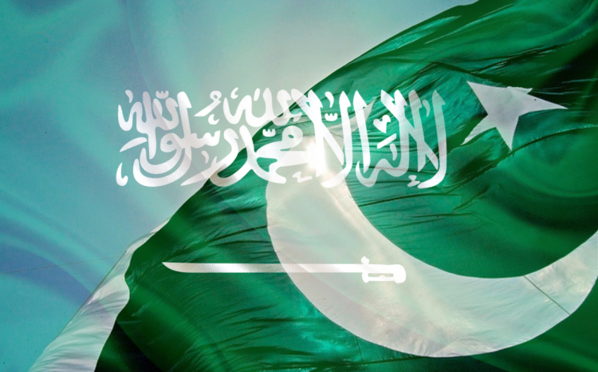
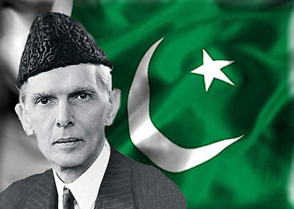
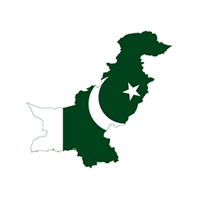

Pakistan The Beautiful Country
Pakistan officially the Islamic Republic of Pakistan, is a federal parliamentary republic in South Asia. It is the sixth-most populous country with a population exceeding 200 million people. It is the 36th largest country in the world in terms of area with an area covering 881,913 km2 (340,509 sq mi). Pakistan has a 1,046-kilometre (650 mi) coastline along the Arabian Sea and the Gulf of Oman in the south and is bordered by India to the east, Afghanistan to the west, Iran to the southwest and China in the far northeast respectively.
Muhammad Ali Jinnah was founder of Pakistan. Pakistan is unique among Muslim countries as it is the only country to have been created in the name of Islam. As a result of the Pakistan Movement led by Muhammad Ali Jinnah and the subcontinent's struggle for independence, Pakistan was created in 1947 as an independent nation for Muslims from the regions in the east and west of the Subcontinent where there was a Muslim majority. It is an ethnically and linguistically diverse country, with a similar variation in its geography and wildlife. Initially a dominion, Pakistan adopted a new constitution in 1956, becoming an Islamic republic. An ethnic civil war in 1971 resulted in the secession of East Pakistan as the new country of Bangladesh. In 1973 Pakistan adopted a new constitution which established a Federal Government based in Islamabad alongside its pre-existing parliamentary republic status - which consists of four provinces and four federal territories. The Constitution also states that all laws are to conform with the injunctions of Islam as laid down in the Quran and Sunnah.
A regional and middle power, Pakistan has the sixth largest standing armed forces in the world and is also a nuclear power as well as a declared nuclear-weapons state, being the second in South Asia and the only nation in the Muslim world, to have that status. Pakistan has a semi-industrialised economy with a well-integrated agriculture sector, and a growing services sector. Pakistan maintains strategic endowments such as a border with China, India, Iran and direct connection to the Arabian Sea. Pakistan is a member of the United Nations, the Commonwealth of Nations, the Next Eleven Economies, Shanghai Cooperation Organisation, ECO, UfC, D8, Cairns Group, Kyoto Protocol, ICCPR, RCD, UNCHR, Asian Infrastructure Investment Bank, Group of Eleven, CPFTA, Group of 24, the G20 developing nations, ECOSOC, founding member of the Organisation of Islamic Cooperation, SAARC and CERN.
Information About Pakistan
| Capital | Language | Currency | Religion |
|---|---|---|---|
| Islamabad | Urdu | Pakistani Rupee | Islam |
Government of Pakistan
| Cheif of Army Staff | President | Prime Minister | Speaker Assembly | Chief Justice |
|---|---|---|---|---|
| General Qamar Javed Bajwa | Mamnoon Hussain | Nawaz Shareef | Ayaz Sadiq | Anwar Zaheer Jamali |